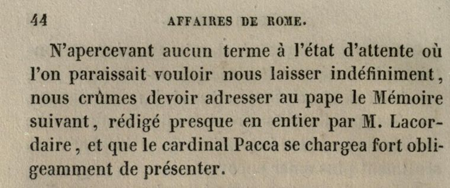
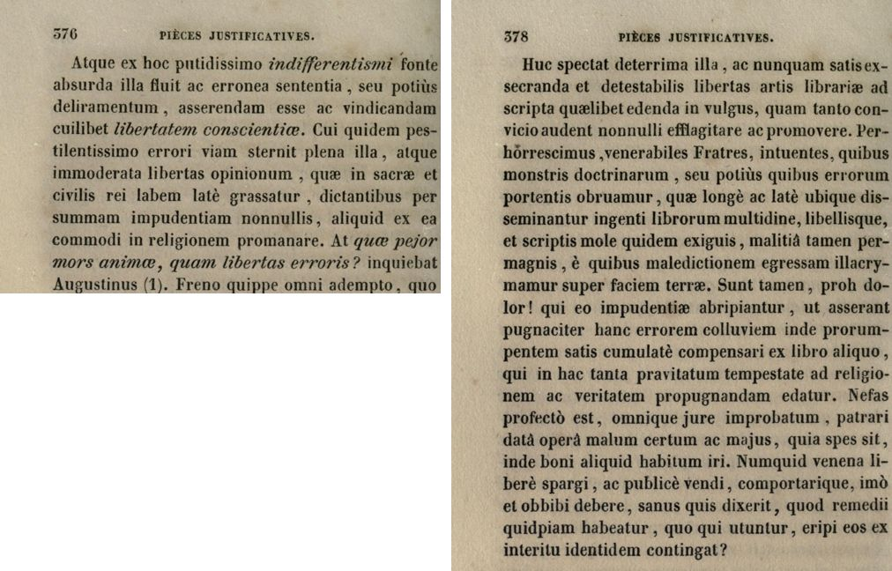

Lacordaire’s memorial (p. 44)
French: Brussels 1837, p. 44, scan n47. Highlighted: Lamennais’s attribution of the memorial, which is what Lecky reports.

Seeing no end to the state of waiting in which they seemed to mean to leave us indefinitely, we thought we should address to the Pope the following Memorial, drawn up almost entirely by M. Lacordaire, which Cardinal Pacca very obligingly undertook to present.
Translation: this edition’s draft.
Original French
N’apercevant aucun terme à l’état d’attente où l’on paraissait vouloir nous laisser indéfiniment, nous crûmes devoir adresser au pape le Mémoire suivant, rédigé presque en entier par M. Lacordaire, et que le cardinal Pacca se chargea fort obligeamment de présenter.
Lecky (vol. II, ch. V, note 20): “see the memorial on the subject drawn up by the Abbé Lacordaire, and reproduced by Lammenais. (Affaires de Rome, pp. 37–89.)” The attribution is Lamennais’s own, with his “almost entirely”. For Lacordaire himself, see Montalembert’s memoir.
Gregory XVI, Mirari vos (1832), as printed by Lamennais (pp. 376–379)
Latin with facing French: Brussels 1837, “Pièces justificatives”, pp. 376–379, scan n379–n382. Lamennais prints the whole encyclical, Latin and French on facing pages. Highlighted: the sentences Lecky translates in the text at note 82.

And from this most foul fountain of indifferentism flows that absurd and erroneous opinion, or rather madness, that liberty of conscience must be asserted and secured for everyone. The way to this most pestilent error is paved by that full and immoderate liberty of opinions which spreads far and wide to the ruin of Church and State, some men saying, with the utmost impudence, that some benefit flows from it to religion. But what worse death of the soul is there than the liberty of error? said Augustine. …
To this belongs that worst, never sufficiently execrated and detestable liberty of the booksellers’ art to publish any writings whatever to the public, which some dare to demand and promote with such clamour. … Yet there are some, alas! so carried away by impudence as to assert stubbornly that the flood of errors bursting out from it is amply made up for by some book published, in this great storm of wickedness, to defend religion and truth. It is certainly wrong, and condemned by every law, to do a certain and greater evil on purpose because there is hope that some good will come of it. Would any sane man say that poisons should be freely scattered, publicly sold and carried about, and even drunk, because there is some remedy by which those who use it are now and then snatched from death?
Translation: this edition’s draft from the Latin. Lamennais’s facing French is close to it.
Original Latin
[p. 376] Atque ex hoc putidissimo indifferentismi fonte absurda illa fluit ac erronea sententia, seu potiùs deliramentum, asserendam esse ac vindicandam cuilibet libertatem conscientiæ. Cui quidem pestilentissimo errori viam sternit plena illa, atque immoderata libertas opinionum, quæ in sacræ et civilis rei labem latè grassatur, dictantibus per summam impudentiam nonnullis, aliquid ex ea commodi in religionem promanare. At quæ pejor mors animæ, quam libertas erroris? inquiebat Augustinus (1). …
[p. 378] Huc spectat deterrima illa, ac nunquam satis exsecranda et detestabilis libertas artis librariæ ad scripta quælibet edenda in vulgus, quam tanto convicio audent nonnulli efflagitare ac promovere. … Sunt tamen, proh dolor! qui eo impudentiæ abripiantur, ut asserant pugnaciter hanc errorem colluviem inde prorumpentem satis cumulatè compensari ex libro aliquo, qui in hac tanta pravitatum tempestate ad religionem ac veritatem propugnandam edatur. Nefas profectò est, omnique jure improbatum, patrari datâ operâ malum certum ac majus, quia spes sit, inde boni aliquid habitum iri. Numquid venena liberè spargi, ac publicè vendi, comportarique, imò et obbibi debere, sanus quis dixerit, quod remedii quidpiam habeatur, quo qui utuntur, eripi eos ex interitu identidem contingat?
(1) S. Aug. Ep. CLXVI.
Lecky translates the encyclical in his text (vol. II, ch. IV, at note 82) and gives the date and place correctly (“delivered at St. Maria Maggiore on the Feast of the Assumption, 1832”). His English is faithful except at one point: “that … liberty of publication of all books which the populace relish” adds a relish that is not in the Latin, which says only books published “in vulgus”, to the public. The Augustine quotation that Gregory borrowed is referred by Lamennais’s footnote to Augustine’s Letter 166.
Further down the rabbit hole
Sources that Lecky cites in the notes next to the ones that cite this page.
- Bossuet, Defensio declarationis cleri gallicaniKings as fathers: “Abimelech” means “My father the king”
- De Thou, Histoire universelle, book 96A pope praises the murder of a king
- Milton, AreopagiticaTruth torn to pieces like Osiris, and why the search must not be licensed
- Rousseau, Du contrat socialWhy civil and theological intolerance cannot be split
- Sleidan, The General History of the ReformationShould all Jewish books be burned? Reuchlin said no, and Europe took sides
- Suárez, Defensio fidei catholicae, Book VIMay the Pope release subjects from their oath to a king? The Jesuit reply to James I


Backlinks
Every place in Rationalism in Europe that links to this page (generated automatically when the site is built).